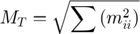
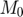
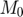
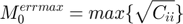
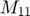
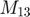
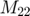
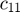
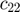
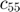

Output focimt cell array formats
Contents
The results of seismic moment tensor inversion performed using focimt.m routine are by default returned in a cell array. The cell array is composed of n elements, each containing seismic moment tensor solution from a single earthquake. The order of seismic moment tensor solutions in the output cell array corresponds to the order of input cell array data, or accordingly to the order of event/phase data in the input ASCII files.
The package provides getsolution.m routine that can efficiently extract information from moment tensor inversion output cell array. See Examples section for details.
Consider the output of the seismic moment tensor inversion using focimt, returned in the following example:
[Output, Input] = focimt('./examples/example2_raw.txt');
Output
Output =
[1x1 struct] [1x1 struct]
This particular dataset contained event and phase data from two earthquakes. To access the seismic moment tensor solution from a particular earthquake, one have to specify explicitly the element of Output cell array:
Output{1}
ans =
event_id: '344_014_+165'
n_trials: 1
calculation_dt: 7.3660e+05
full: [1x1 struct]
deviatoric: [1x1 struct]
dc: [1x1 struct]
Each cell array element contains basic information on earthquake as well as three MATLAB structure arrays full, deviatoric and dc containing seismic moment tensor inversion solutions for unconstrained, deviatoric and double-couple seismic moment tensors.
General seismic moment tensor solution data
The basic data holds the general information on processed earthquake:
event_id
Contains the event ID number specified in the input file or input cell array.
n_trials
This field contains the number of calculations of the seismic moment tensor. Unless Jacknife Test or Input Data Resampling is used while running the seismic moment tensor inversion using focimt.m routine, the number of solutions is always 1, i.e. n_trials=1. If Jacknife parameter is 'on', three structures full, deviatoric and dc will contain various fields containing seismic moment tensor output parameters in a form of cell arrays (or matrices) with m+1 elements (or rows) where m is the number of stations. First elements (or rows) of fields will correspond to the seismic moment tensor solution obtained from original input dataset with full phase data, and the following elements (or rows) will correspond to the Jacknife solutions, with every other solution calculated from the input data with different station removed.
Similarly, if Input data resampling procedure is enabled, the output cell array will contain various field where each field will have m+1 elements. Again, the first element will correspond to the regular seismic moment tensor inversion, where unperturbed input dataset was used, and the following elements corresponds to the solutions obtained from resampled input data.
calculation_dt
Contains time of calculation in MATLAB datetime format.
Seismic moment tensor solution data
The last three structure arrays, full, deviatoric and dc contain the actual seismic moment tensor inversion results for unconstrained full moment tensor (structure full), constrained deviatoric or equivalently trace-null moment tensor (structure deviatoric) and constrained double-couple moment tensor (structure dc). The format off all structures is the same and can be easily visualized by accessing the particular element of the structure array. For example, to access the full (uncostrained) moment tensor inversion results:
Output{1}.full
ans =
Type: {'N'}
STATION_ID: 0
ISO: 27.1295
CLVD: 10.8363
DC: 62.0343
M0: 6.2537e+13
MT: 6.9100e+13
M0ERRMAX: 1.1698e+10
MW: 3.1674
P: [188.8290 34.1979]
T: [341.1740 52.5050]
B: [89.4300 13.5134]
F1: [87.1460 80.5845 76.2984]
F2: [323.2840 16.5736 145.0050]
Fault: {'TF'}
MXX: [1x6 double]
CXX: [1x6 double]
RMSERROR: 0.0013
Station: {1x25 cell}
UMEASURED: [1x25 double]
UTH: [1x25 double]
The meaning of the fields is as follows:
Type (string or cell array of strings)
Contains information on the type of seismic moment tensor inversion, only meaningfull while Jacknife test or Input Data Resampling is performed. 'N' character denotes the regular solution calculated from original input data. The 'J' character denotes seismic moment tensor solution calculated with Jacknife approach. In this case the information on which station was removed is specified in STATION_ID variable. Finally, the 'B' character denotes the solution coming from the resampled dataset.
ISO (scalar or vector)
Contains the amount of isotropic component in the calculated seismic moment tensors in percents. The value may calculated following Jost and Herrmann (1989) or Vavrycuk (2001) approach.
CLVD (scalar or vector)
Contains amount of CLVD (compensated linear vector dipole) component in the calculated seismic moment tensor. The value is specifed in percents. The value may calculated following Jost and Herrmann (1989) or Vavrycuk (2001) approach.
DC (scalar or vector)
Contains amount of double-couple components in the calculate seismic moment tensor. The value is provided in percents. The value may calculated following Jost and Herrmann (1989) or Vavrycuk (2001) approach.
M0 (scalar or vector)
Contains the scalar seismic moment in Newton-Meters [Nm].
MT (scalar or vector)
Contains the information on total seismic moment in Newton-Meters [Nm]. The value is calculated according to the following formula:

where  are eigenvalues of the full seismic moment tensor. The total seismic moment is equal to the seismic moment  for double-couple constrained moment tensor solution.
are eigenvalues of the full seismic moment tensor. The total seismic moment is equal to the seismic moment  for double-couple constrained moment tensor solution.
M0ERRMAX (scalar or vector)
Hold information on maximum error of the seismic moment tensor. The value is extracted from covariance matrix:

The maximum error is therefore the square root of the maximum diagonal elements of the covariance matrix.
MW (scalar or vector)
Moment magnitude calculated from the total seismic moment using Hanks and Kanamori (1979) formula:
P, T, B (matrix)
These three matrices contain information on trend and plunge of P, T, and B axes. The trend is provided in degrees from north towards east. The plunge is presented in degrees from horizontal towards bottom (plunge equal to 0 corresponds to horizontal (parallel to earth surface) direction while plunge equal to 90 corresponds to pure vertical direction (towards center of Earth).
F1, F2 (matrix)
These two matrices contain fault parameters. First, second and third element (or column when either Jacknife Test or Input Data Resampling is turned on) corresponds to strike, dip and rake. All values are provided in degrees and follows the seismological convention. The strike (first column) is measured from north to east. The dip (second column) is measured from horizontal to vertical and rake (third colum) is positive/negative for thrust/normal faulting.
Fault (string or cell array of strings)
Provides information on the fault type. This value is calculated by comparing the orientation of P, T and B axes with respect to global coordinate system (i.e. which one is the most "vertical" axis, plungin with the highhest angle). 'NF', 'SS', 'TF' denotes normal fault, strike slipe fault and thrust fault, respectively.
MXX (matrix)
Contains information on seismic moment tensor components in AKI's convention. The following elements (or columents, if jacknife mode is used) correspond to , , , , , and . The values are specified in [Nm].
CXX (matrix)
Contains diagonal elements of the covariance matrix with following elements (or columns if jacknife method is used) corresponding to , , , , , and . The covariance matrix is calculated only of L2 norm is used.
RMSERROR (scalar or vector)
Contain RMS error of the seismic moment tensor solution. The RMS error is calculated following the formula:
The RMS error is calculated from measured and predicted seismic moments on all stations (the measured and predicted seismic moments are provided in UMEASURED and UTH matrices).
Station (cell array of strings)
Contains the list of stations used in seismic moment tensor inversion. The order of stations in the cell array reflects the order of data in UMEASURED and UTH matrices.
UMEASURED, UTH (matrix)
These two matrices contain measured and theoretical moments recorded or predicted, respectively, on a particular station speficied by Station cell array. The measured amplitudes correspond to the input data.
Handling output cell array data from many solutions
As an example, let's perform the moment tensor inversion for 90 events using the sample data located in /examples directory:
Solution = focimt('./examples/example3.txt');
The resulting Solution cell array contains 90 elements corresponding to 90 moment tensors calculated, one for each earthquake. Now, to access the results of a particular moment tensor inversion we have to use indexing operator, e.g.:
Solution{5}.full
ans =
Type: {'N'}
STATION_ID: 0
ISO: -41.1231
CLVD: -31.5271
DC: 27.3498
M0: 5.6378e+14
MT: 7.3059e+14
M0ERRMAX: 2.4521e+13
MW: 3.8041
P: [329.9410 58.7743]
T: [154.3800 31.1495]
B: [63.1899 1.9677]
F1: [62.7056 76.1782 -92.0264]
F2: [251.1300 13.9667 -81.8213]
Fault: {'NF'}
MXX: [1x6 double]
CXX: [1x6 double]
RMSERROR: 0.3381
Station: {1x14 cell}
UMEASURED: [1x14 double]
UTH: [1x14 double]
that provide us with results of full moment tensor inversion for the 5th seismic event.
Consider a scenario when we want to extract values of isotropic component from full moment tensor for all earthquakes, for example in order to plot statistics of isotropic component distribution in the analyzed dataset. This can be easily achieved by using the getsolution.m routine:
ISO = getsolution(Solution,'full','ISO');
This will result in a vector composed of 90 elements where each element corresponds to the amount of isotropic component from all 90 earthquakes for which the full seismic moment tensor was calculated. This can be used for plotting the statistics of various parameters for the inverted dataset, e.g.:
hist(ISO)
willl display the distribution of isotropic components in the analyzed dataset.
In principle, more parameters can be extracted from the output cell array at once. For example, to extract the moment magnitude and orientation of P axes for the deviatoric moment tensor solutions of all analyzed earthquakes, the following code may be executed:
[MW,P] = getsolution(Solution,'deviatoric','MW','P');
It is important to note that the order of input parameters ('MW','P' in the example above determines the order of output parameters located on the left side of the formula. Also, the names of input parameters to extract must correspond to the names of variables in the ouput structure array!
The function may be also used to extract general output data outside of 'full', 'deviatoric', and 'dc' structures inside of each cell array element. For example, the general data contains the ID number of events:
Solution{1}
To extract all ID numbers, the following code may be used:
ids = getsolution(Solution,'deviatoric','event_id');
In this case, the second parameter ('deviatoric') is of no use, but still it must be set up to either 'full', 'deviatoric', or 'dc'.
References
Jost, M. L., and R. B. Herrmann (1989), A student’s guide to and review of moment tensors, Seismol. Res. Lett., 60, 37–57.
Vavrycuk, V. (2001). Inversion for parameters of tensile earthquakes, J. Geophys. Res. 106, no. B8, 16339–16355, doi 10.1029/2001JB000372.
ans =
event_id: '004-03781'
n_trials: 1
calculation_dt: 7.3660e+05
full: [1x1 struct]
deviatoric: [1x1 struct]
dc: [1x1 struct]